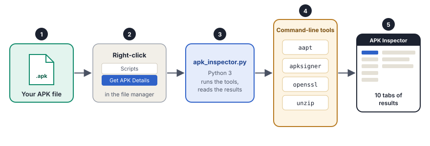

The problem
To examine an APK, you usually switch between many tools. You use the terminal for aapt and apksigner, a different tool for the certificate and a browser for hash lookups. Each tool shows one part of the picture.
APK Inspector puts all the parts in one window. Right-click an APK file, select Scripts and then Get APK Details. You do not need the terminal.
How it works

- You select the APK. Right-click the file in the Nautilus file manager.
- The script starts. A Nautilus script gives the path of the file to the app.
- The app runs the tools. The Python app runs
aapt,apksigner,opensslandunzipon the APK. - The app reads the results. It collects the output of each tool and finds the important values.
- You see the report. A GTK window shows the results in ten tabs.
What you get
.so file and its CPU architectureScreenshots
Install
APK Inspector works on Ubuntu with the Nautilus file manager.
# 1. Get the code
git clone https://github.com/bhardwajAbhi/apk-inspector.git
cd apk-inspector
# 2. Install the tools that it uses
sudo apt install aapt apksigner openssl unzip python3-gi gir1.2-gtk-3.0
# 3. Install APK Inspector
bash install.shThe installer copies the app to ~/.local/share/apk-inspector/, adds the Nautilus script and restarts Nautilus. For decompilation, also install jadx-gui. This is optional.
Use
- From the file manager: right-click an
.apkfile, select Scripts, then Get APK Details. - From the terminal: run the Python script with the path of the APK.
APK Inspector does static analysis. It reads the APK but does not run it. Thus, it is safe to use on a malicious APK. It also does not send the APK to a server. All the work happens on your computer.
Static analysis has a limit: it cannot see code that the app downloads or decrypts when it runs. For that, you need dynamic analysis.